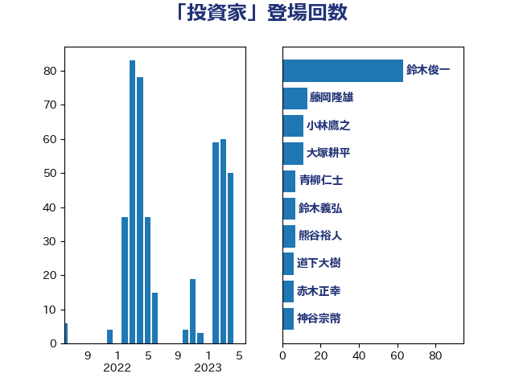

単語「投資家」

| 鈴木俊一 | 自由民主党 | 63 回 |
| 藤岡隆雄 | 立憲民主党 | 13 回 |
| 小林鷹之 | 自由民主党 | 11 回 |
| 大塚耕平 | 国民民主党 | 11 回 |
| 青柳仁士 | 日本維新の会 | 7 回 |
| 鈴木義弘 | 国民民主党 | 7 回 |
| 熊谷裕人 | 立憲民主党 | 7 回 |
| 道下大樹 | 立憲民主党 | 6 回 |
| 赤木正幸 | 日本維新の会 | 6 回 |
| 神谷宗幣 | 参政党 | 6 回 |
| 沢田良 | 日本維新の会 | 6 回 |
| 杉田水脈 | 自由民主党 | 6 回 |
| 藤巻健太 | 日本維新の会 | 5 回 |
| 萩生田光一 | 自由民主党 | 5 回 |
| 岸田文雄 | 自由民主党 | 5 回 |
| 落合貴之 | 立憲民主党 | 4 回 |
| 若宮健嗣 | 自由民主党 | 4 回 |
| 笠井亮 | 日本共産党 | 4 回 |
| 牧山ひろえ | 立憲民主党 | 4 回 |
| 櫻井周 | 立憲民主党 | 4 回 |
| 吉田はるみ | 立憲民主党 | 4 回 |
| 井上哲士 | 日本共産党 | 4 回 |
| 青山大人 | 立憲民主党 | 3 回 |
| 階猛 | 立憲民主党 | 3 回 |
| 福田昭夫 | 立憲民主党 | 3 回 |
| 山岸一生 | 立憲民主党 | 3 回 |
| 堂込麻紀子 | 無所属 | 3 回 |
| 前原誠司 | 国民民主党 | 3 回 |
| 中西健治 | 自由民主党 | 3 回 |
| 上田勇 | 公明党 | 3 回 |
| 西村康稔 | 自由民主党 | 2 回 |
| 藤田文武 | 日本維新の会 | 2 回 |
| 細田健一 | 自由民主党 | 2 回 |
| 柳ヶ瀬裕文 | 日本維新の会 | 2 回 |
| 林芳正 | 自由民主党 | 2 回 |
| 末松義規 | 立憲民主党 | 2 回 |
| 徳永久志 | 立憲民主党 | 2 回 |
| 平山佐知子 | 無所属 | 2 回 |
| 川田龍平 | 立憲民主党 | 2 回 |
| 岬麻紀 | 日本維新の会 | 2 回 |
| 山際大志郎 | 自由民主党 | 2 回 |
| 小倉將信 | 自由民主党 | 2 回 |
| 宗清皇一 | 自由民主党 | 2 回 |
| 大石あきこ | れいわ新選組 | 2 回 |
| 和田有一朗 | 日本維新の会 | 2 回 |
| 吉田統彦 | 立憲民主党 | 2 回 |
| 務台俊介 | 自由民主党 | 2 回 |
| 住吉寛紀 | 日本維新の会 | 2 回 |
| 伊藤孝恵 | 国民民主党 | 2 回 |
| 中谷一馬 | 立憲民主党 | 2 回 |
| たがや亮 | れいわ新選組 | 2 回 |
| 高橋光男 | 公明党 | 1 回 |
| 高木啓 | 自由民主党 | 1 回 |
| 音喜多駿 | 日本維新の会 | 1 回 |
| 青木愛 | 立憲民主党 | 1 回 |
| 青山繁晴 | 自由民主党 | 1 回 |
| 長友慎治 | 国民民主党 | 1 回 |
| 金村龍那 | 日本維新の会 | 1 回 |
| 金子恭之 | 自由民主党 | 1 回 |
| 重徳和彦 | 立憲民主党 | 1 回 |
| 谷合正明 | 公明党 | 1 回 |
| 藤丸敏 | 自由民主党 | 1 回 |
| 穂坂泰 | 自由民主党 | 1 回 |
| 神田潤一 | 自由民主党 | 1 回 |
| 石川昭政 | 自由民主党 | 1 回 |
| 石川博崇 | 公明党 | 1 回 |
| 田嶋要 | 立憲民主党 | 1 回 |
| 片山大介 | 日本維新の会 | 1 回 |
| 浜口誠 | 国民民主党 | 1 回 |
| 櫻井充 | 自由民主党 | 1 回 |
| 松原仁 | 立憲民主党 | 1 回 |
| 東国幹 | 自由民主党 | 1 回 |
| 末次精一 | 立憲民主党 | 1 回 |
| 新妻秀規 | 公明党 | 1 回 |
| 斉藤鉄夫 | 公明党 | 1 回 |
| 岩田和親 | 自由民主党 | 1 回 |
| 山崎誠 | 立憲民主党 | 1 回 |
| 山口壯 | 自由民主党 | 1 回 |
| 尾身朝子 | 自由民主党 | 1 回 |
| 小野泰輔 | 日本維新の会 | 1 回 |
| 小宮山泰子 | 立憲民主党 | 1 回 |
| 宮下一郎 | 自由民主党 | 1 回 |
| 大岡敏孝 | 自由民主党 | 1 回 |
| 大串博志 | 立憲民主党 | 1 回 |
| 塩崎彰久 | 自由民主党 | 1 回 |
| 土田慎 | 自由民主党 | 1 回 |
| 古賀之士 | 立憲民主党 | 1 回 |
| 仁比聡平 | 日本共産党 | 1 回 |
| 中田宏 | 自由民主党 | 1 回 |
| 上野通子 | 自由民主党 | 1 回 |